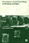

Web
Images
Videos
Maps
News
Shopping
Gmail
more
▼
Books
Finance
Translate
Scholar
Blogs
Realtime
YouTube
Calendar
Photos
Documents
Reader
Sites
Groups
even more »
My library
|
Help
|
Sign in
Advanced Book Search
Grooming, gossip, and the evolution of language
By Robin Dunbar
10 Reviews
Write review
About this book
Add to My Library
▼
Get this book
Harvard University Press
Amazon.com
Barnes&Noble.com
Books-A-Million
Find in a library
All sellers »
Related books

All related books »
Pages displayed by permission of
Harvard University Press
.
Copyright
.
Page 1